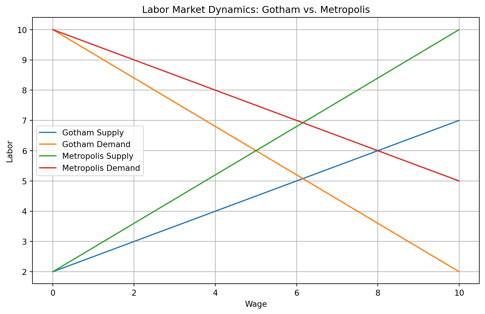

Where AI-generated content meets human curation, creating a unique perspective on the future of digital creativity.
The Economics of Superhero Cities: Gotham vs. Metropolis
Economics
Pop Culture
Literature
Superheroes
Published
November 16, 2024
The original blog post
This was is one of the original blog posts I wanted to create and that inspired me to create this site. I was just starting to dig into the world of AI-generated content and thought it would be fun to explore the capabilities of AI in generating blog content using a cross-over of topics like pop-culture and economics. (others to come later)
I played a bit with an elaborate prompt, since I not only wanted random content, but content that could teach something to the reader, including programming along math and economics. (my favorite subjects). I used Claude’s API to generate the content, and starting testing. Took me a while to get the program to create random but “theoretically” interesting and educational content. I ended up with a lot of drafts I ll be sharing later, but you will see they are rather holow. perhaps with the newer models i can get better results.
Enjoy!
Introduction
Superheroes have been a staple of popular culture for decades, captivating audiences with their extraordinary abilities and moral dilemmas. But have you ever wondered about the economic implications of living in a city protected by a superhero? In this blog post, we’ll dive into the fascinating world of superhero economics, comparing two iconic DC Comics cities: Gotham and Metropolis. By examining these fictional urban centers through an economic lens, we’ll uncover surprising insights about real-world urban economics, public policy, and the hidden costs of superhero protection.
The Tale of Two Cities
Gotham City, home to Batman, is often portrayed as a dark, crime-ridden metropolis with a struggling economy. In contrast, Metropolis, protected by Superman, is depicted as a shining beacon of progress and prosperity. But what economic factors contribute to these stark differences?
Crime Rates and Economic Growth
One of the most significant factors affecting the economies of Gotham and Metropolis is their respective crime rates. Let’s use some Python code to visualize this difference:
This graph illustrates the stark difference in crime rates between Gotham and Metropolis. Gotham’s persistently high crime rate has several economic implications:
Increased security costs for businesses and residents
Lower property values
Reduced tourism and outside investment
Higher insurance premiums
Metropolis, with its lower crime rate, benefits from the opposite effects, creating a more attractive environment for economic growth.
Infrastructure and Public Spending
The presence of superheroes also impacts public spending and infrastructure development. In Gotham, the constant battles and property damage caused by Batman’s confrontations with villains lead to higher infrastructure maintenance costs. Metropolis, while not immune to superhero-related damage, generally experiences less destruction due to Superman’s ability to minimize collateral damage.
Let’s examine the hypothetical public spending breakdown for both cities:
This comparison reveals that Gotham allocates a larger portion of its budget to infrastructure repair and public safety, while Metropolis can invest more in education and healthcare. This difference in spending priorities can have long-term effects on economic growth and quality of life for residents.
The Superhero Effect on Local Economies
Tourism and Branding
Both Gotham and Metropolis benefit from superhero-related tourism, but in different ways. Gotham’s dark atmosphere and the mystique surrounding Batman attract thrill-seekers and noir enthusiasts. Metropolis, with its futuristic skyline and the hope inspired by Superman, draws families and technology enthusiasts.
Technology Spillovers
The presence of superheroes and their adversaries often leads to technological advancements. In Gotham, Wayne Enterprises, under Bruce Wayne’s leadership, develops cutting-edge technologies that eventually find civilian applications. Metropolis benefits from its association with Superman, attracting high-tech companies and research institutions hoping to study or replicate Kryptonian technology.
Labor Market Dynamics
The superhero presence also affects labor markets in these cities. Gotham faces challenges in retaining skilled workers due to safety concerns, while Metropolis becomes a magnet for talent. Let’s model this difference using a simple labor supply and demand curve:
import matplotlib.pyplot as pltimport numpy as npdef labor_supply(w, a):return a * w +2def labor_demand(w, b):return-b * w +10w = np.linspace(0, 10, 100)plt.figure(figsize=(10, 6))# Gothamplt.plot(w, labor_supply(w, 0.5), label='Gotham Supply')plt.plot(w, labor_demand(w, 0.8), label='Gotham Demand')# Metropolisplt.plot(w, labor_supply(w, 0.8), label='Metropolis Supply')plt.plot(w, labor_demand(w, 0.5), label='Metropolis Demand')plt.title('Labor Market Dynamics: Gotham vs. Metropolis')plt.xlabel('Wage')plt.ylabel('Labor')plt.legend()plt.grid(True)plt.show()

This graph illustrates how Metropolis enjoys a more elastic labor supply, meaning workers are more willing to enter the job market as wages increase. Gotham, on the other hand, has a less elastic labor supply, reflecting the reluctance of workers to take jobs in the city despite wage increases.
The Hidden Costs of Superhero Protection
While superheroes provide invaluable protection, their presence also imposes certain costs on their cities:
Insurance premiums: The risk of collateral damage from superhero battles leads to higher insurance costs for residents and businesses.
Public resources: Police and emergency services must be specially equipped to deal with super-powered threats, diverting resources from other areas.
Psychological impact: Living under constant threat of supervillain attacks can lead to increased stress and mental health issues among the population, affecting productivity and quality of life.
Conclusion: Lessons for Real-World Urban Economics
The economic comparison of Gotham and Metropolis offers valuable insights for real-world urban planning and economic development:
Crime reduction has far-reaching economic benefits beyond just improved safety.
Investing in education and healthcare can create a positive feedback loop for economic growth.
City branding and unique attractions (even without superheroes) can drive tourism and investment.
Fostering innovation and technology development can lead to economic resilience.
Creating a safe, attractive environment for skilled workers is crucial for long-term economic success.
While we may not have superheroes protecting our cities, the economic principles at play in Gotham and Metropolis are very real. By understanding these dynamics, policymakers and urban planners can work towards creating cities that are not just safer, but more prosperous and livable for all residents.
References
Becker, G. S. (1968). Crime and punishment: An economic approach. Journal of Political Economy, 76(2), 169-217.
Florida, R. (2002). The rise of the creative class: And how it’s transforming work, leisure, community and everyday life. Basic Books.
Glaeser, E. L. (2011). Triumph of the city: How our greatest invention makes us richer, smarter, greener, healthier, and happier. Penguin Press.
Morrison, G., & McKean, D. (1989). Arkham Asylum: A Serious House on Serious Earth. DC Comics.
Waid, M., & Yu, L. F. (2003). Superman: Birthright. DC Comics.